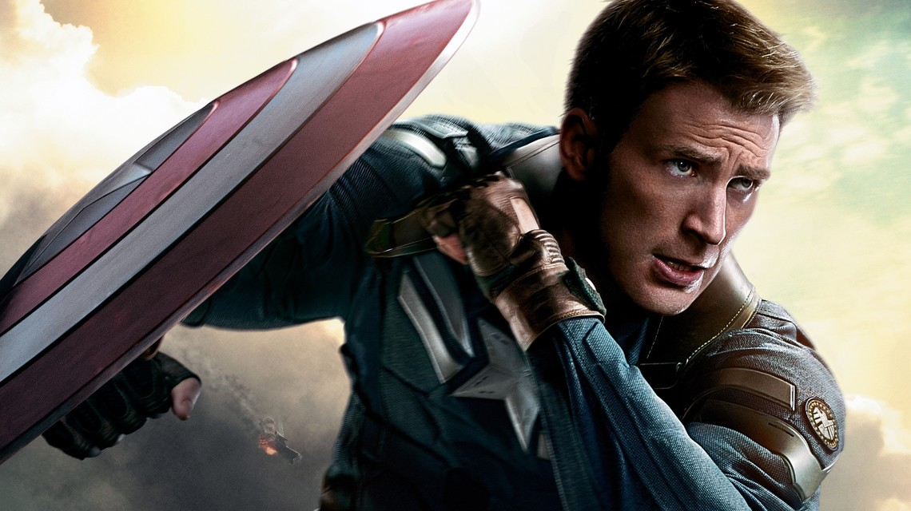

Chris Evans sebagai Steve Rogers / Captain America, dimulai pada tahun 1942 saat Perang Dunia II, seorang pria bertubuh kurus dan pendek dengan riwayat kesehatan buruk, Steve Rogers (Chris Evans), berusaha untuk bergabung ke militer Amerika untuk ikut berperang. Setelah mencoba berkali-kali dan tidak berhasil, Steve akhirnya berhasil lolos seleksi karena dibantu Dr. Erskine (Stanley Tucci) yang melihat kebaikan di hati Steve. Dr. Erskine menunjuknya sebagai percobaan teknologi terbaru militer Amerika yang bisa mengubah tubuh seseorang dengan memanipulasi gen dan ototnya, menjadikannya manusia unggul
Steven Rogers sendiri diceritakan sebagai seorang pemuda asal Manhattan, New York City. Ia merupakan imigran miskin. Ayahnya, Joseph Rogers meninggal saat Steve masih bayi sedangkan sang ibu, Sarah Rogers meninggal kerena sakit Pneumonia saat Steve berusia 10 tahun. Saat Perang Dunia Kedua, Amerika membutuhkan tentara lebih untuk maju di medan perang. Steve Rogers pun mencoba ikut ambil bagian dalam seleksi tentara tersebut bersama temannya yang bernama Bucky Barnes. Namun tubuhnya yang kecil membuat dia sulit masuk akademi militer.
Namun kegigihan dan ambisinya dalam membela kebenaran membuat seorang ilmuan bernama Dr. Abraham Erskine yang saat itu menjadi dokter militer membantunya lolos seleksi. Saat masa pelatihan Dr. Abraham Erskine tertarik dengan kepribadian Steve yang pintar, jujur, dan dapat diandalkan.
Saat itu, Dr. Abraham Erskine dan temannya Howard Stark (ayah Tony Stark) sedang mengadakan uji coba serum untuk membuat prajurit super. Steve menjadi satu-satunya orang yang diuji coba lantaran serum yang di temukan oleh Dokter Abraham Erskine tersebut hanya diketahui oleh dirinya dan Dr.Abraham meninggal karena kecelakaan saat proses uji coba penyuntikan serum pada Steve.
Hasilnya, Steve yang kurus dan pendek menjadi sosok prajurit kekar dan gagah. Pada komiknya dijelaskan pada saat itu Steve Rogers dapat berlari sejauh 1,6 Km dalam waktu 73 detik saja. Ia akhirnya dijuluki Captain America. Berbekal sebuat tameng yang terbuat dari Vibranium, Captain Amerika mencoba untuk menghapus organisasi Hydra yang merupakan organisasi teroris.
Pada saat bertarung melawan Red Skull, Captain America mengalami Kecelakaan sehingga dirinya terkubur didalam es selama lebih dari 60 tahun hingga akhirnya ia diselamakan oleh Nick Fury dan bergabung dengan Organisasi S.H.I.E.L.D. Captain America Juga masuk Anggota the Avengers.